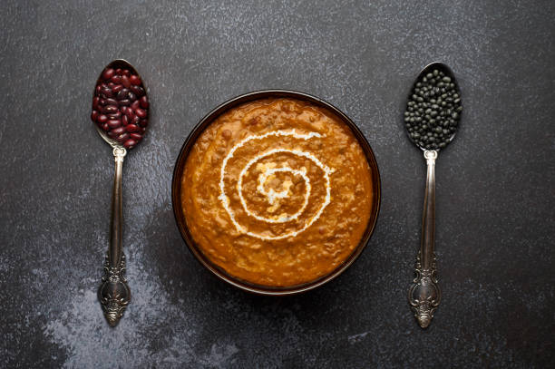

Lentils in Butter Sauce

Ingredients
- Red Lentils
- Cumin Seeds
- Clarified Butter
- Slit Green Chilli
- Turmeric Powder
- Chopped fresh chillies
- Chopped coriander leaves
- Mustard seeds
- Salt
- Oil
Steps
- Wash the lentils in running water and drain
- In a heavy bottomed pot, head the ghee and add in cumin seeds
-
When the seeds crackle, add in the lentils and stir them in the pot
until they are opaque
- Add the turmeric powder, the salt and the slit green chilli
- Stir for two more minutes and then add about 300ml of water
-
Reduce the heat and simmer the lentils until they are soft and mashed
- Taste and adjust the seasoning, if required
-
In a pan, heat the oil and add in the mustard seeds and chopped fresh
chillies
- When seeds crackle, pour oil spice mixture over the lentils
- Finish with the chopped coriander leaves
- Serve hot
Back to homepage